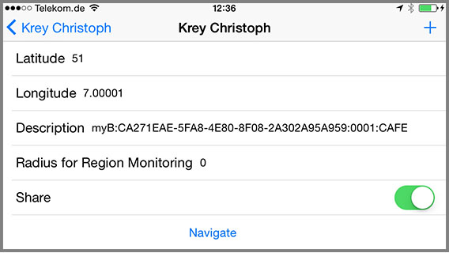
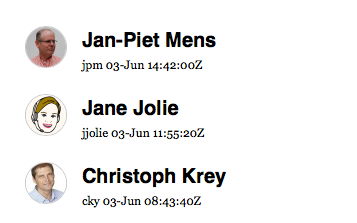
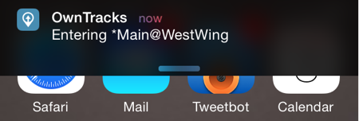

iBeacons
If you want to monitor an iBeacon region rather than a circular region set the
radius to zero (0) or a negative value (iOS only), and add the beacon UUID, major, and minor numbers.

Set the UUID of the beacon, and you can optionally specify the major and/or
minor identifier numbers of the beacons as a decimal number ranging from 1 to 65535 if you desire finer control over which beacons OwnTracks will monitor.
Setting major or minor number to zero (0) means no major or minor number is specified.
Note that you should probably not use major or minor number 0, because the meaning of 0 is "any".
If the UUID is valid, iBeacon monitoring will start.
Examples:
Name myBeacons
UUID CA271EAE-5FA8-4E80-8F08-2A302A95A959
Major 0
Minor 0
Name mySpecificBeacon
UUID CA271EAE-5FA8-4E80-8F08-2A302A95A959
Major 1
Minor 33000
In the first example above, OwnTracks will monitor all beacons with the specified UUID, whereas
in the second example, OwnTracks would monitor just that one specific beacon with the major number 1 and the minor number 33000.
Notes
The app recognizes the beacon typically within 10 seconds, which is a typical beacon-publishing frequency, and this is very good for presence detection.
If you use a - as the first character in your Waypoint description e.g. -MyBeacon, the app will ignore short disruptions of the connection to the beacon (hold down).
Setting the radius to a negative value (e.g. -1) on iOS, the app will update the location coordinates of the waypoint on each enter/leave event. This update will be transmitted to the broker when the share option is on and will be reflected on your map screen. You may use this to keep track of moveable items as luggage or your car.
Example: office
Upon arriving at our Frankfurt location, I see from the monitor panel at the reception that Jane is in the office, so I'll pop in to ask a question.

Instead of relying solely on the location your smart phone thinks you are at, small, and relatively inexpensive iBeacons can pinpoint you down to a few meters. OwnTracks for iOS has had support for iBeacons for a few releases now, and it works very reliably.
Beacons use Bluetooth low energy to transmit a UUID (typically modifiable) together with user-defined major and minor numbers, and these allow us to identify, say, a particular room in a building or even a specific corner of a room. The major number can be used, say, to identify an office building, whereas you'd configure a beacon's minor number to identify a room within that building. Alternatively, if you don't want to bother with identifying rooms, you can e.g. set all beacons to have the same major and minor numbers.
Let's assume the office we're discussing has a few beacons. Let's further assume we do not want to track people within a particular room; instead we just want to capture whether an employee is in this particular office building. We can configure all beacons with the same UUID, and we will ignore the major and minor numbers. (How a beacon gets it's UUID, major, and minor set depends on the product.)
We define a UUID, say, DEADBEEF-ABBA-CAFE-AFFE-123456789012 which we assign to all beacons, and configure them accordingly. (The Blukii iBeacons we use have a utility with which we can configure them accordingly.)
What we then do is configure a waypoint within the iOS OwnTracks app. The values for latitude/longitude are irrelevant. What is important is the UUID separated from the name of the beacon (I chose Main@WestWing here) by a colon. A beacon's major and minor are optionally concatenated to that string, also colon-separated.
Instead of painstakingly configuring this on the device proper, I prepare a small file called office.otrw (the .otrw extension is important), with the following JSON payload:
{
"waypoints" : [
{
"tst" : 1432817332,
"lat" : 52.0,
"_type" : "waypoint",
"lon" : 6.0,
"rad" : 0,
"desc" : "Main@WestWing:DEADBEEF-ABBA-CAFE-AFFE-123456789012:0001"
}
],
"_type" : "waypoints"
}
I then either place that file on a Web server, or e-mail it as attachment to my colleagues who open that on their OwnTracks device, and presto: the device has the beacon monitoring regions configured.
From this point on, OwnTracks monitors all beacons with that particular UUID, and it will publish an enter or leave event whenever the device gets within range of a beacon or leaves it. Additionally, the device shows the event with a local iOS notification.

We publish these events as JSON via MQTT to the MQTT broker the device is connected to, and from there, you consume the message and do as you please.
{
"_type": "transition",
"acc": 65,
"desc": "Main@WestWing",
"event": "enter",
"lat": 2.2222,
"lon": 1.1111,
"tid": "jp",
"tst": 1433342520,
"wtst": 1432817332
}
For instance, send an e-mail when a particular person leaves the building, publish a list of people who remain in the building on a monitor (as above), etc.
To summarize: OwnTracks can monitor beacons by configuring it either with:
- a UUID only, in which case the app would report any beacon with that UUID, irrespective of its major/minor numbers.
- a UUID with a major number: the app would report iBeacons with the specified UUID and exactly that major number
- all three: the UUID, the major and minor numbers, in which case the app reports events on precisely that beacon.